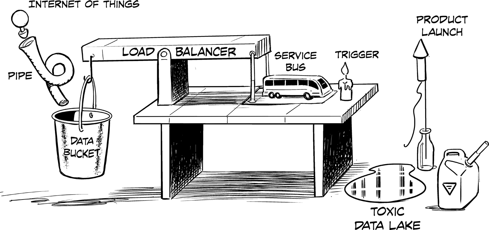
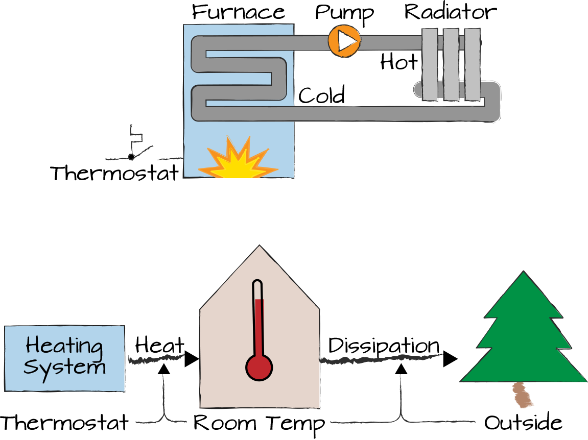

For What It Was Designed to Do!

Much of what architects do is reason about the behavior of complex systems: systems that have many pieces and complex interrelationships. There’s an entire field dedicated to such reasoning, called systems thinking or complex systems theory. While popular software architecture definitions focus on a system’s components and interrelationships, systems thinking emphasizes behavior (Chapter 8). As architects, we should view structure simply as a means to achieve a desired behavior. Thinking in systems helps us do so.
A residential heater provides a canonical example of a system, which we also look at when we realize that control is an illusion (Chapter 27). As demonstrated in Figure 10-1, a heating system’s typical architecture diagram would depict the components and their relationships: a furnace generates hot water or air, a radiator or air duct delivers the heat to the room, and a thermostat controls the furnace. The structural/control system theory point of view, shown at the top of the figure, considers the thermostat the central element: it switches the furnace on and off as needed to regulate the room temperature.

In contrast, the systems thinking point of view, at the bottom of Figure 10-1, focuses on the room temperature as the central variable and the reasons why it is influenced: the burning furnace increases the room temperature while heat dissipation to the outside reduces it. Heat dissipation depends on both the room and the outside temperature: in cold weather more heat dissipates through walls and windows. That’s why smart heating systems increase the heating power in cold weather. In a way, systems thinking is a parallel universe that looks at the same system from a completely different angle, an angle that helps us better understand why we are building something.
Systems thinking helps us understand interrelated behavior; for example, feedback loops. The room thermostat establishes a negative feedback loop, which is typical for control systems: if the room temperature is too high, the furnace turns off, letting the room cool down again. Negative feedback loops usually aim to keep a system in a relatively stable state—the room temperature will still oscillate slightly depending on the hysteresis of the thermostat and the inertia of the heating system. The self-stabilizing range of most systems is limited, though: a heater cannot cool a room in the heat of summer or compensate for an open window during winter.
Positive feedback loops behave in the opposite way: an increase in one system variable fuels a further increase. We know the dramatic effects of such behavior from explosives (heat releases more oxygen to burn hotter), nuclear reactions (a classical “chain reaction”), or hyperinflation (a spiral of price and wage increases). Another positive feedback loop consists of more cars on the road leading to investments in roads as opposed to public transit, which makes it more compelling to commute by car. Likewise, rich people tend to have more investment options to achieve higher returns, leading to a “the rich getting richer” symptom, as for example described in Piketty’s Capital in the Twenty-First Century.1
Positive feedback loops can be dangerous due to their “explosive” nature. Policies are often designed to counteract such positive feedback loops with negative ones; for example, by applying higher tax rates to higher incomes or by increasing gasoline tax while subsidizing public transit. However, it’s difficult to balance out the exponential character of positive feedback loops. Thinking in systems helps us reason about such effects.
Gerald Weinberg2 highlighted the importance of thinking in systems by dividing the world into three areas: organized simplicity is the realm of well-understood mechanics, such as levers or electrical systems consisting of discrete resistors and capacitors. You can calculate exactly how these systems behave. On the other end of the spectrum, unorganized complexity doesn’t allow us to understand exactly what’s going on, but we can model the system as a whole statistically because the behavior is unorganized, meaning the parts don’t interrelate much. Modeling the spread of a virus falls into this category. The tricky domain is the one of organized complexity, where structure and interaction between components matter, but the system is too complex to solve it by using a formula. This is the area of systems. And the area of systems architecture.
If we can’t determine system behavior with mathematical formulas, how can systems thinking help us? Complex systems, especially systems involving humans, tend to be subject to recurring system effects or patterns. These effects explain why fishermen keep overfishing, depleting their own livelihood, and why tourists flocking to the same destination destroy exactly what attracted them. Understanding these patterns allows us to better predict system behavior and influence it. Donella Meadows’s book Thinking in Systems3 contains a list of common effects, including these typical ones:
Bounded rationality, a term coined by Nobel laureate Herbert A. Simon, captures the effect that people will generally do what is rational, but only within the context that they observe. For example, if an apartment building has a central heating system without consumption-based billing, people will leave the heater on all day and open the windows to cool down the apartment as needed. Obviously, this is a giant waste of energy and leads to pollution, resource depletion, and global warming. However, if your bounded context is just that of the temperature in your apartment and your wallet, this behavior is the rational thing to do, whether you like it or not: keeping the heater running allows you to control the room temperature more easily as you avoid the inertia of the heating system having to warm up.
The idea of the tragedy of the commons derives from the concept of the commons, a shared pasture in old Irish and English villages that was open to grazing by all the villagers’ animals. As this common resource is free, villagers are incentivized to acquire more cattle to feed on the commons. Of course, as the commons is a finite resource, this behavior will lead to resource depletion and poverty; hence, the tragedy. One reason such a system doesn’t self-regulate is delay: the effect of the wrong behavior will only become apparent when it is too late.
The complexity of these effects is underlined by the fact that Elinor Ostrom, the only woman to win the Nobel Prize in Economics, famously debunked4 the concept of the tragedy of the commons.
Systems documentation, especially in IT, tends to depict the static structure but rarely the behavior of the system. Ironically, however, the system’s behavior is what’s most interesting: systems generally exist to exhibit a certain, desirable behavior. For example, the heating system was created to keep the temperature in your house at a comfortable level. Server infrastructure is made redundant to increase availability. In both cases the system structure is simply a means to an end.
A system’s structure is simply a means to achieve a desired behavior.
The difficulty in deriving system behavior from its components can be illustrated by the heating system in my apartment, which supplies both floor heating and wall radiators with hot water and comprises a handful of major components: the gas burner heats the water inside a primary circuit driven by a built-in pump. Two additional external pumps feed the hot water from the primary circuit to the floor heating and wall radiators, respectively. A misconfiguration caused the secondary pumps to not draw enough water, and therefore heat, from the primary circuit, which quickly overheated. This, in turn, caused the gas heater to shut off for a fixed duration, leading to a lack of heating power: naturally, the house cannot get warm when the heater is not burning. Because the house wouldn’t warm up, the technician’s intuition was to increase the burner’s heating power. However, this only exacerbated the problem: the system wasn’t able to move enough heat away from the primary circuit, so increasing the gas burner’s power only overheated it faster. After almost a dozen attempts, the heating system still wasn’t operating as designed, because the technicians might understand the individual system components but they are not comprehending the complex system behavior.
Seems a little complicated? For architects, this stuff is our daily bread and butter. Understanding complex interrelationships between system components and influencing them to achieve a desired behavior is what architects do. Often a good diagram (Chapter 22) will help.
Most of what users see from a system are events: things happening as a result of the system behavior, which in turn is determined by the system structure, that is often invisible. If the users are unhappy with those events, such as the heater shutting off despite the room being cold, they often try to inflict a change, such as setting the room thermostat higher, without analyzing or changing the system behind them. The book Inviting Disaster5 provides dramatic examples of how misunderstanding a system led to major catastrophes such as the Three Mile Island nuclear reactor incident or the capsizing of the Deepwater Horizon drilling platform. In both cases, compromised system displays led operators to perform the very action that caused the disaster because they didn’t understand the underlying system and its behavior from the events they observed. Their mental model deviated from the real system, causing them to make fatal decisions.
It has repeatedly been observed that humans are particularly bad at steering systems that have slow feedback loops, meaning those that exhibit reactions to changing inputs only after a significant delay. A classic example is MIT’s “beer game” in which participants on average perform almost 10 times worse than the ideal scenario.6 Overuse of credit cards is another classic example: people keep piling on debt until they are no longer able to pay even the interest and wonder how they got themselves into such a mess.
Also, humans who don’t think about the system as a whole are prone to taking actions that have the opposite of the intended effect. For example, people react to overly full work calendars by setting up “blockers,” which make the calendars even fuller. Instead, we need to understand and fix what causes the full calendars; for example, a misaligned organizational structure that requires too many alignment meetings. You can’t fix a system by merely addressing the symptoms.
Understanding system effects can help you devise more effective ways to influence the system and thus its behavior. For example, transparency is a useful antidote to the bounded rationality effect because it widens people’s bounds. An example from Donella Meadows’s book illustrates that having the electricity meter visible in the hallway caused people to be more conservative with their energy consumption without additional rules or penalties. Interestingly, systems thinking can be applied to both organizational and technical systems. We’ll learn this, for example, when we scale an organization (Chapter 30).
John Gall’s Systems Bible7 gives a humorous but also insightful account of the ways in which systems behave, often against our intention or intuition.
Changing systems is difficult not only because of their complex structure, but also because most of them actively resist change. Organizational systems’ change resistance achieves longevity, for example, through well-defined processes, but presents a challenge when a shift in the environment requires the organization to change. Frederic Laloux8 describes it as a key characteristic of amber organizations: they are built on the assumption that what worked in the past will work in the future, and it often served them well over thousands of years.
As described in Chapter 7, if you request better documentation for architecture reviews, “the system” might respond by scheduling lengthy workshops that drain your available time. If you increase pressure, the system will respond with subquality documentation that increases your review cycles. You must therefore get to the root of the problem and highlight the value of good documentation, properly train architects, and allocate time for this task in project schedules.
Most organizational systems have settled into a steady state over time and serve their purpose well enough. If the business environment demands a different system behavior, the system will actively resist by wanting to revert to its previous state. It’s like trying to push a car out of a ditch: the car keeps rolling back until you finally get it over the hump. This system effect makes organizational transformation so challenging.
1 Thomas Piketty, Capital in the Twenty-First Century (Boston: Belknap Press, 2014).
2 Gerald M. Weinberg, An Introduction to General Systems Thinking (Dorset House, 2001).
3 Donella H. Meadows, Thinking in Systems: A Primer (White River Junction, VT: Chelsea Green Publishing, 2008).
4 David Bollier, “The Only Woman to Win the Nobel Prize in Economics Also Debunked the Orthodoxy,” Evonomics, July 28, 2015, https://oreil.ly/9Na0H.
5 James R. Chiles, Inviting Disaster: Lessons from the Edge of Technology (New York: Harper Business, 2002).
6 John D. Sterman, “Modeling Managerial Behavior,” Management Science, Vol. 35, No. 3 (March 1989), https://oreil.ly/wrtzb.
7 John Gall, The Systems Bible, Third Edition (Walker, MN: General Systemantics Press, 2002).
8 Frederic Laloux and Ken Wilber, Reinventing Organizations: A Guide to Creating Organizations Inspired by the Next Stage in Human Consciousness (Nelson Parker, 2014).